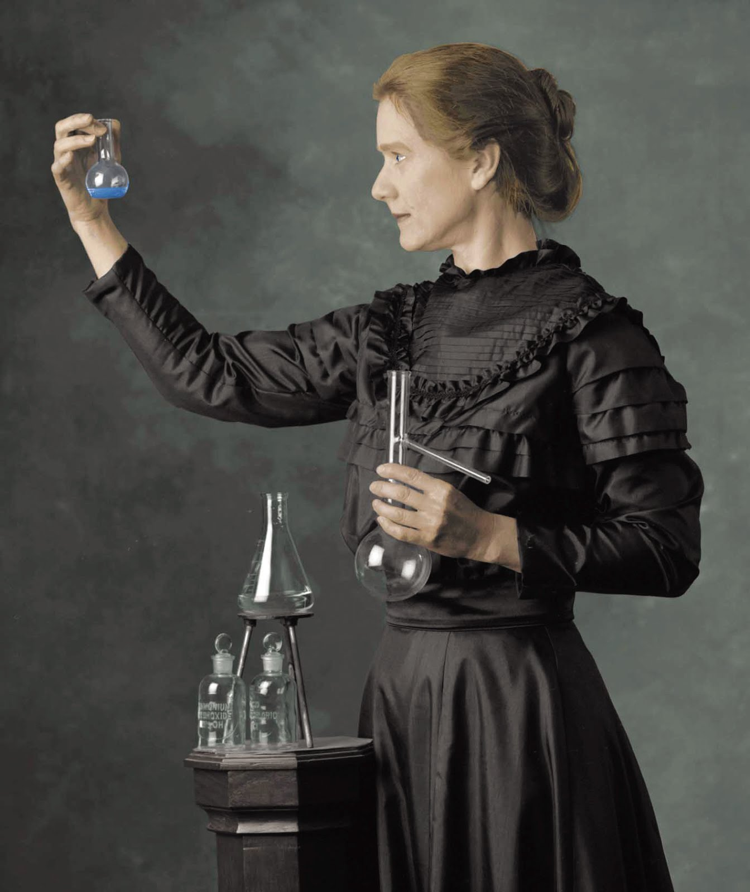

Top 10 Influential Women in History
By: Mia
Introduction
Although history has often been dominated by the achievements of men, women have also played a crucial role in shaping our world. From political leaders and scientists to authors and activists, influential women throughout history have made significant contributions to their fields and the world at large.
The Top 10 Influential Women in History celebrates the lives and accomplishments of some of the most remarkable women who have left an indelible mark on society. This list is not exhaustive, but rather a tribute to the women who have challenged gender norms and societal conventions, paving the way for future generations.
Their work has spanned centuries and continents, from ancient Egypt to modern-day America. These women have fought for social justice, championed scientific discoveries, and revolutionized the arts. Through their achievements, they have inspired and empowered countless individuals, leaving a lasting impact on our world.
Each woman featured on this list has a unique story and set of accomplishments. From Cleopatra's political cunning and Elizabeth I's leadership during a time of political turmoil, to Harriet Tubman's bravery in leading slaves to freedom and Marie Curie's groundbreaking discoveries in radioactivity, these women have left their mark on history.
Their legacies continue to inspire future generations of women and men to pursue their passions, make a difference in the world, and challenge societal conventions. Join us in celebrating the Top 10 Influential Women in History and their lasting impact on our world.
ad space
1. Cleopatra
Cleopatra: The Iconic Queen of Ancient Egypt Who Defied Patriarchy and Defined Her Legacy
Cleopatra, the Queen of Ancient Egypt, is an influential figure who has come to define a powerful and confident female archetype. She was a ruler who defied the traditional gender roles of her society, seizing control of her own fate with bold and decisive action. Cleopatra broke the mold of the submissive female and became an icon of female empowerment.
As a queen, Cleopatra led Egypt through a period of prosperity and stability, forging alliances with both Rome and her own people to protect the nation's interests. She was a diplomat, a warrior, and a cunning strategist who could hold her own against any opponent. Cleopatra's intelligence and charm made her a force to be reckoned with in the ancient world.
Cleopatra is also reputed to have been a great beauty, a perception that has influenced Western depictions of her image over the centuries. While her looks remain a topic of debate among historians, there can be no doubt that she was a charismatic and captivating figure who inspired devotion and loyalty from those around her.
Despite the challenges she faced as a woman in a male-dominated society, Cleopatra was able to break through cultural barriers and assert her influence over history. She remains one of the most fascinating and influential women in history, a testament to the power of individual will and determination in the face of adversity.
ad space
2. Mother Teresa
Mother Teresa: A Life of Service and Compassion
Mother Teresa is perhaps one of the most well-known and respected women in history. Her tireless efforts to help the poorest of the poor have inspired millions around the world. Born Anjezë Gonxhe Bojaxhiu in Skopje, Macedonia, in 1910, Mother Teresa spent her life serving others through her missionary work in India and around the world.
Mother Teresa's journey began when she moved to Calcutta in 1929 to become a teacher. During this time, she was struck by the poverty and suffering she saw all around her. She eventually left teaching to devote herself to the less fortunate, founding the Missionaries of Charity in 1950. The organization, which now operates in over 130 countries, provides care for the sick, the dying, and the destitute.
Throughout her life, Mother Teresa remained committed to her mission of serving the poor, even in the face of political criticism and declining health. Her selfless work earned her numerous honors, including the Nobel Peace Prize in 1979. In 2016, she was declared a saint by the Roman Catholic Church, a testament to her enduring legacy.
Mother Teresa's example continues to inspire people of all ages and backgrounds to seek out ways to serve their communities and make a positive impact. Her life is a model of compassionate service, and her legacy serves as a reminder to us all to use our talents and resources to help those in need.
ad space
3. Marie Curie
Marie Curie: A Pioneer in Science and Gender Equality
Marie Curie is a name that resonates in science history. She was the first woman to receive a Nobel Prize and the only woman to win it twice in different fields. Her groundbreaking work in the field of radioactivity has inspired generations of scientists and researchers. But the path to success wasn't easy for Marie, as she had to fight against social norms and lack of resources.
Born in Poland in 1867, Marie's passion for science emerged in her teenage years. She was determined to study at the Sorbonne in Paris, but as a woman, she faced many obstacles. She had to work as a tutor and governess to finance her studies, and even though she got a degree in physics, she couldn't continue her studies due to financial constraints. Despite these difficulties, Marie never gave up on her dream and eventually got a scholarship to continue her studies in Paris.
Marie's passion for science led her to collaborate with her husband, Pierre Curie, in researching radioactivity. Together, they discovered two new elements: polonium and radium. Despite being recognized for their discovery, Marie faced criticism and was even accused of stealing her husband's work. However, she remained resilient and continued her research, becoming the first woman to receive a Nobel Prize in Physics in 1903.
Marie Curie's research was not only groundbreaking but also paved the way for gender equality in science. She was an advocate for women's education and fought for their right to study science. Her contribution to science and gender equality has inspired numerous women to pursue careers in science.
Marie Curie's story is a testament to the power of perseverance and determination. She overcame gender stereotypes and scarcity of resources to become one of the greatest scientists of all time. Today, Marie's legacy lives on, inspiring a new generation of scientists and researchers to push the boundaries of science and fight for gender equality.
ad space
4. Rosa Parks
Rosa Parks: The Courageous Mother of the Civil Rights Movement
Few names in history ring as powerfully as Rosa Parks, and for good reason. Her refusal to surrender her bus seat to a white man in 1955 sparked a chain reaction that profoundly impacted the course of American history. Widely regarded as the "Mother of the Civil Rights Movement," Parks dedicated her life to political and social activism, fighting tirelessly for racial justice and human rights.
Born in Tuskegee, Alabama on February 4, 1913, Parks grew up in a time when segregation was an accepted norm of southern society. Despite facing countless barriers and hurdles, Parks persevered, earning a degree from Alabama State Teachers College before moving to Montgomery to work as a seamstress.
It was here, in 1955, that Parks' courage changed the course of American history. On December 1, Parks boarded a city bus after a long day of work, taking a seat in the "colored" section. When a white man entered the bus and no seats in the white section were available, the driver demanded that Parks and three other black passengers vacate their seats to make room for the white man.
Parks refused. Her simple but powerful act of defiance ignited a boycott that lasted over a year, resulting in the desegregation of Montgomery's public transportation system and sparking a wave of civil rights activism across the country.
Parks' commitment to the cause only grew stronger as the years passed. She worked with the NAACP to fight voter suppression and segregation in schools, and was a vocal critic of police brutality and the Vietnam War. Her legacy continues to inspire generations of activists today, reminding us of the power of individual courage to effect change on a grand scale.
In a world that too often silences the voices of the marginalized, Rosa Parks stands as a shining example of what one person can do to change the course of history.
ad space
5. Queen Elizabeth I
Queen Elizabeth I: A Trailblazer who Defied the Odds
Queen Elizabeth I, often known as the Virgin Queen, is one of the most iconic and influential women in history. She is known for defying cultural and societal norms, as well as breaking glass ceilings in a patriarchal society. The renowned British monarch was a woman ahead of her time, setting an unmatchable standard for future female leaders.
Born to King Henry VIII and Anne Boleyn, Elizabeth's life was plagued with challenges, including the execution of her mother on treason charges, being declared illegitimate, and constant threats to her life from her siblings, Mary and Edward. Despite these challenges, Elizabeth persevered and rose to become one of the most successful and revered monarchs in history.
Elizabeth's reign was marked with several accomplishments, including economic expansion, religious tolerance, and the establishment of colonies overseas. She is also remembered for her diplomacy skills, which allowed her to forge alliances and avoid wars.
Furthermore, she was a patron of the arts, and her era is referred to as the Elizabethan era, which was marked by a cultural and artistic renaissance that produced influential works like William Shakespeare's plays.
In conclusion, Queen Elizabeth I's unwavering determination, visionary leadership, and incredible achievements make her a significant frontrunner for our list of the Top 10 Influential Women in History. She remains a symbol of inspiration and continues to inspire future generations to break barriers and lead with impeccable grace and style.
ad space
6. Indira Gandhi
Indira Gandhi: The Iron Lady of India
When we think of influential women in history, the name Indira Gandhi immediately comes to mind. Born in 1917, she was the daughter of India's first prime minister, Jawaharlal Nehru, and was groomed for a life in politics from an early age. With a career spanning over two decades, she served as India's first and only female prime minister, earning the nickname "The Iron Lady of India" for her tough leadership.
Gandhi faced numerous challenges during her tenure, including economic instability, political corruption, and regional disputes. However, she remained committed to her vision of a strong and united India, and was instrumental in shaping the country's political and economic landscape.
One of her most notable accomplishments was the Green Revolution, which transformed India's agriculture industry and helped alleviate hunger and poverty in the country. Gandhi also championed women's empowerment and pushed for equal rights and opportunities for women in all spheres of life.
Despite facing criticism and opposition from various quarters, Gandhi remained steadfast in her convictions and refused to back down. Her unwavering resolve and leadership skills inspired a generation of Indian women to pursue their dreams and break down gender barriers.
Today, Gandhi's legacy continues to inspire millions around the world, and she remains a symbol of strength, courage, and resilience. As the sixth most influential woman in history, her impact on India and the world at large cannot be overstated.
ad space
7. Malala Yousafzai
It is no secret that women have played an essential role in shaping history as we know it. Throughout time, they have overcame war, fought for equality, and made significant contributions that have forever changed the course of nations. The list of influential women seems endless, but there are few whose impact is undeniable. Among them is Malala Yousafzai, a remarkable young woman who has made her mark in history for her bravery, resilience, and advocacy for women's rights.
Malala was born in Swat Valley in northwest Pakistan, and from a young age, she was known for her love of education. However, in 2008, the Taliban had banned girls from attending school, and Malala became an outspoken advocate for girls' right to education. Despite facing threats and assassination attempts, Malala continued to speak out, and in 2012, she was shot by a Taliban gunman while on a bus ride home from school. She survived the attack and continued to be an advocate for girls' education globally.
Malala's courage and dedication to furthering girls' education earned her numerous accolades, including being named the youngest-ever Nobel Peace Prize laureate in 2014. She has inspired countless individuals worldwide through her writing, speeches, and humanitarian efforts. In 2019, Malala became a UN Messenger of Peace and continued to use her platform to draw attention to the education inequalities that girls face in many parts of the world.
At a time when global attention is increasingly focused on the empowerment of women, Malala remains a beacon of hope and inspiration. Her unwavering commitment to the rights of the girl child has earned her a place among the most influential women of all time. Malala Yousafzai's story is one of resilience and vision, and her contributions have changed the world for the better. Her legacy will undoubtedly continue to inspire and motivate future generations to advocate for a better world.
ad space
8. Joan of Arc
Joan of Arc: The Fearless Fighter Who Defied Gender Roles
Joan of Arc was a French warrior who lived in the 15th century and is remembered as one of the most courageous and determined women in history. Born into a peasant family, Joan was only 13 years old when she first had visions of Saint Michael, Saint Margaret, and Saint Catherine, who urged her to fight for the French and remove the English from France during the Hundred Years' War. Joan was a devoutly religious woman who believed that God had chosen her to serve as the savior of her country. Her unyielding devotion to her mission made her one of the most inspiring figures in the history of France.
Joan's military achievements were nothing short of remarkable. Despite being a teenage girl with no military training, she led the French army to several victories against the English. Her leadership skills and her ability to inspire her troops made her a legendary figure in her own time. She was eventually captured by the English and burnt at the stake when she was only 19 years old. However, her bravery and her legacy have lived on long after her death.
Joan of Arc was widely celebrated as a national heroine in France, even during her lifetime, and she went on to inspire generations of women to defy gender roles and societal expectations. She has been the subject of countless books, films, and works of art, and her story remains an inspiration to millions of people around the world.
Despite living more than five centuries ago, Joan of Arc's legacy remains just as relevant today as it was in her own time. She inspires us all to fight against injustice and to stand up for what we believe in, even in the face of overwhelming odds. Her enduring legacy reminds us of what we can achieve when we remain true to our values and never give up on our dreams.
ad space
9. Harriet Tubman
Harriet Tubman: The Fearless Conductor of the Underground Railroad
Harriet Tubman was a true heroine in American history, known for her unwavering courage, determination, and incredible feats. Born into slavery in Maryland, Tubman escaped to freedom in the North and then dedicated her life to helping others do the same. She bravely led more than 300 enslaved individuals to freedom through the Underground Railroad network, risking her life and freedom every step of the way. Tubman's bravery, leadership skills, and unwavering commitment to justice make her one of the top 10 influential women in history.
As a slave herself, Tubman understood the full extent of human suffering and the desire for freedom better than most. In addition to her work as a "conductor" on the Underground Railroad, she also worked as a spy for the Union Army during the Civil War and played a key role in the women's suffrage movement. Despite facing significant obstacles, including physical injuries and struggles with poverty and illness, Tubman never wavered in her commitment to fighting injustice.
Tubman's legacy as a fearless leader and advocate for justice continues to inspire generations today. She is widely recognized as a true American hero, and many buildings, parks, and schools bear her name in her honor. Her unwavering dedication to justice reminds us of the need to fight for what is right, even in the face of seemingly insurmountable odds. In the words of Tubman herself, "Every great dream begins with a dreamer. Always remember, you have within you the strength, the patience, and the passion to reach for the stars to change the world."
ad space
10. Anne Frank
Anne Frank: A Symbol of Hope and Courage
When we talk about the most influential and inspiring women in history, we cannot overlook the inspiring story of Anne Frank. She was just a regular girl, living in Nazi-occupied Amsterdam during World War II, but her diary has become an iconic testament to the human spirit and an inspiration to millions around the world.
Born on June 12, 1929, in Frankfurt, Germany, Anne Frank was a young girl of Jewish ancestry. When the Nazis came to power in 1933, her family moved to Amsterdam, where they hoped to live safely. However, the Nazis invaded the Netherlands in 1940, and their lives changed forever.
Anne's family went into hiding in a secret attic space above her father's workplace. During her time in hiding, Anne wrote about her experiences, thoughts and emotions in a diary. Her diary is a moving and candid account of life during the Nazi occupation, of hiding, and of the human spirit under immense pressure.
Tragically, Anne and her family were discovered in 1944, and they were sent to concentration camps. Anne died in Bergen-Belsen concentration camp in 1945, at the age of 15. However, her diary survived and has been translated into over 70 languages. It has become a symbol of hope and courage, reminding us that even in the darkest hours, there is always a ray of light.
Anne Frank's story is a reminder of the power of the human spirit and the importance of standing up against oppression and hatred. Her legacy lives on, inspiring generations of people around the world to stand up for justice and equality.
ad space
Conclusion
As we reflect on the remarkable legacies left behind by some of the most influential women in history, it's hard not to feel a sense of awe and inspiration. From political pioneers to scientific trailblazers, the women on our list have overcome obstacles and shattered glass ceilings to make indelible marks on the world. While each woman's accomplishments may be unique, there are common threads that tie them together: unwavering determination, unbridled creativity, and a fearless spirit.
As we draw this journey to a close, we offer you a final reflection on why we need to keep telling these stories. In a world where women's voices are still silenced, marginalized, or dismissed, it's crucial to lift up the stories of those who have gone before us, and those who continue to fight for progress. The women on this list remind us that anything is possible when we stand up for ourselves and refuse to be silenced.
These women's legacies live on not only through the history books, but through the work of countless women who continue to carry the torch. From grassroots activists to politicians fighting for change, the women of today are building upon the foundation laid by those who came before us. This is a history that belongs to all of us.
We invite you to continue exploring the stories of these remarkable women—and to look for the countless other women whose contributions may not be as well-known, but are no less important. May their legacies inspire us to keep pushing forward, to keep fighting for equality and justice for all.
ad space